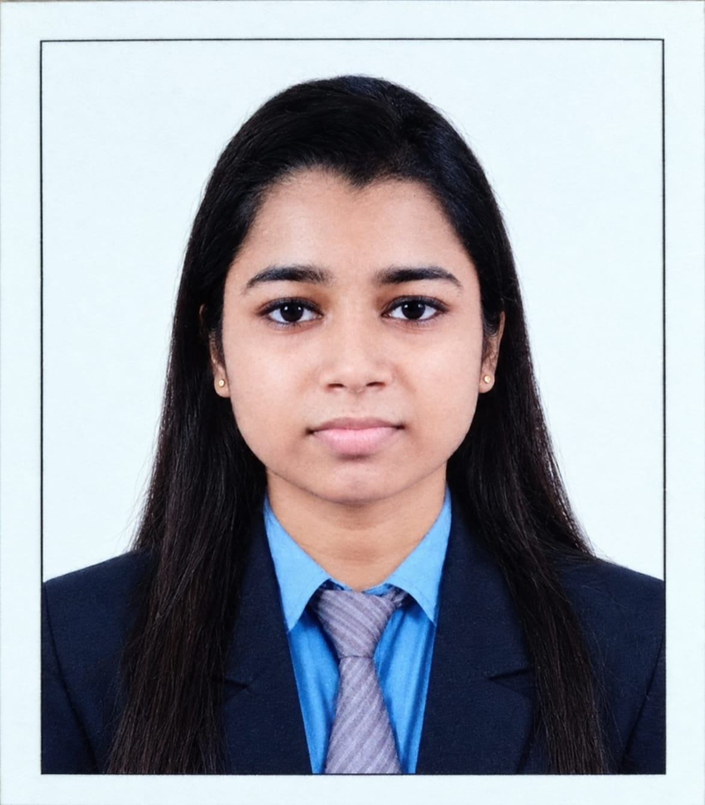

More Than Just A Developer.
Hello! I'm Aswathy Shaji
I am an MCA student with a passion for technology, creativity and problem-solving. I enjoy turning ideas into practical applications and continuously exploring new possibilities in software development.

MY INTRODUCTION
Curious Mind. Creative Thinking. Continuous Growth.
My academic journey in computer applications has helped me build a foundation in programming, database management and web development. I completed my Bachelor of Computer Applications (BCA) and am currently pursuing my Master of Computer Applications (MCA).
Through academic projects, I have explored how different technologies work together to create useful web-based applications. I enjoy learning by doing, experimenting with ideas and improving my technical knowledge.
I believe every project is an opportunity to learn something new. I am motivated to keep growing, face challenges with a positive attitude and develop into a capable software developer.
A QUICK SNAPSHOT
Get to Know Me
A few things that describe my academic and professional interests.
Education
Master of Computer Applications
Field of Interest
Software & Web Development
Based In
Kerala, India
Mindset
Learning, Creating & Improving
MY LEARNING PATH
The Journey So Far
Every step has helped me build my knowledge and experience.
Higher Secondary Education
Completed Higher Secondary education at MKNMHSS Higher Secondary School, Kumaramangalam.
Bachelor of Computer Applications
Studied at Santhigiri College of Computer Sciences, Vazhithala, and developed a foundation in computer applications and programming.
Master of Computer Applications
Pursuing MCA at Santhigiri College of Computer Sciences, Vazhithala, while exploring software development and practical project work.
WHAT DRIVES ME
My Interests & Goals
What motivates me to keep moving forward.
Technology & Development
I enjoy exploring programming languages, web technologies and developing applications that solve practical problems.
Learning & Problem Solving
I enjoy understanding new concepts, solving programming challenges and improving my knowledge through continuous learning.
My Career Goal
My goal is to grow as a skilled software developer, gain professional experience and contribute to meaningful projects.
"I believe in learning something new every day, turning challenges into opportunities and building a better version of myself."
Every great journey begins with curiosity.
Let's Connect